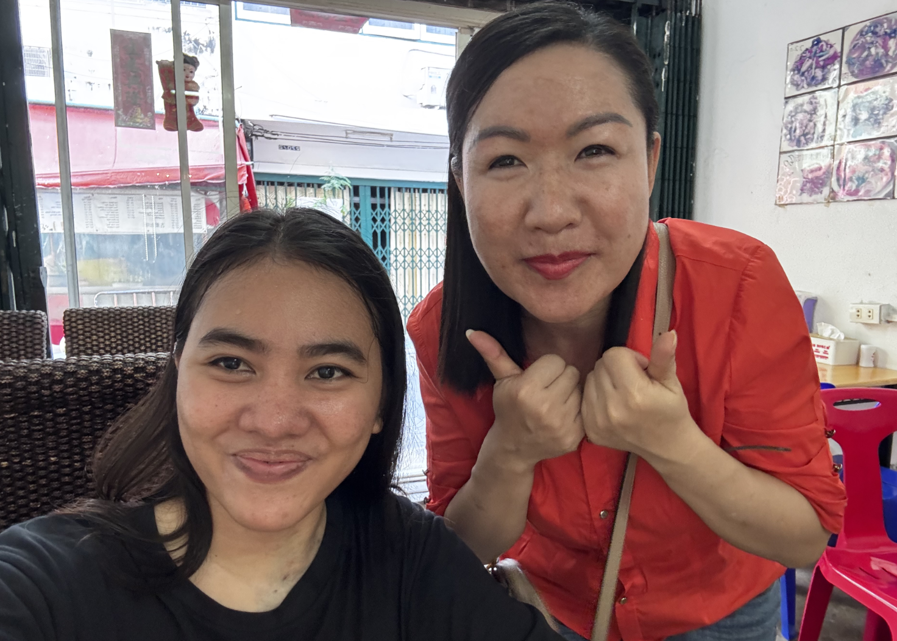

date posted: mar 27, 2026
Girl, i met the person i wanna be years from now. So one faithful day, i went out of my hostel to find my lunch. i feel kinda bored already with my usual place which is just like 1km away from the place i am staying at, it is called Yummy Thai Food (they cook pretty good food, but i always eat here), so i decided to explore (as in, I took extra ten steps away from the usual spot) and ended up to another resto.
I was then trying to communicate the food i wanna eat, and the woman, in her 40s, communicate back to me. I couldn't understand her so i pulled out my phone for google translation. It was set in english > thai vice versa, and then let her talk using the microphone feature. but then the google trans could not pick it up.
And then some goddess entered the shop. A 30ish looking woman, translucent white skin. She told me "chinese" multiple times. Ah, so the owner is Chinese. So then we settled with the food i am going to eat, thank God for the goddess' presence in the shop.
As the owner prepared my food, we chatted a lot. asked about my arm. so we hit it off. I asked about her age and she said she is 45. I was like, girl. she looks like 30. i told her that. and she was pretty happy about it. I was pretty amazed as well. She looks gorg.
She told me that she eat less meat, mostly veggies, pray to buddha and don't have kids, that is why she stays so young and stress free.
and damn, isn't that my dream life, child less, carefree, with boyfriend (maybe) that don't care if id have kids or not.
We kept talking more about stuff. she ended up showing me her photos when she was 30, she looked the same as she is now. LOL.
Truly, not having kids is the key. the keyyyyyy.
her boyfriend, btw, is in Taiwan while she stays near the shop and eat in the shop (as her owner is also a close friend of her) everyday.
so anw, meet my IDOL.
